Design guidelines for Windows app icons
Follow these guidelines to create a great app icon for your app that feels at home on Windows.
Design guidance: Metaphor
An icon should be a metaphor for its app: a visual representation of the value proposition, functions, and features of the product.
Representation
Your icon should illustrate the concept of your app in a singular element using simple forms.
When creating your icon, use clear metaphors and leverage concepts that are largely understood - such as an envelope for mail or magnifying glass for search. The key concept should be your icon's focal point; don't dilute your icon by adding decorative elements that don’t support the metaphor. To enhance communication clarity, use no more than two metaphors in a single icon. If a single metaphor can be used, that’s even better.
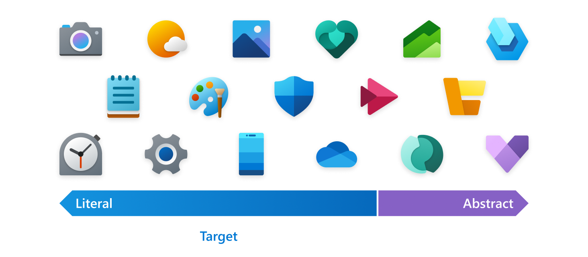
Literal metaphors are best for articulating the purpose and promise in a clear way. A good test for an effective icon is when users can tell what it represents without a label.
Only use an abstract metaphor in instances where it's impossible to find a literal, self-evident metaphor to represent the core functionality of a product.
Icons should not include typography as part of the design. Letters and words on your icon should be avoided and only used when it’s essential. The app’s name will appear in association with the icon throughout the operating system.
Design guidance: Shape
The grid and rounded corners
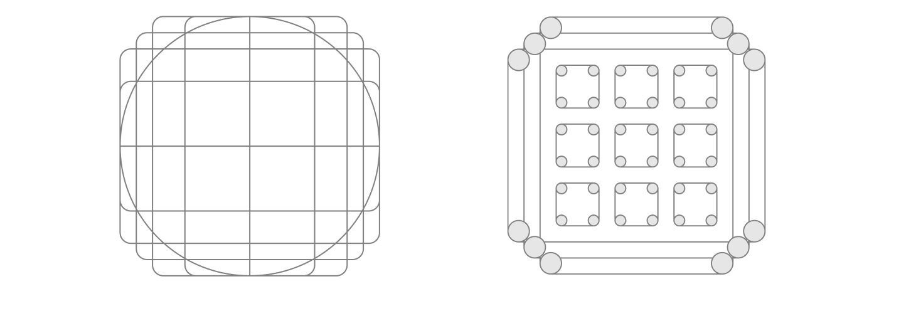
Microsoft aligns its icons to a 48x48 grid initially to ensure a balanced icon that takes advantage of the space available, while still maintaining a distinctive shape and silhouette. Aligning your icon's distinctive features to the grid will balance well with the other icons around it.
Approachability is a Microsoft personality principle. One way we communicate this trait is by using soft or rounded corners. Shapes used in your app's product icons should be built to align with the icon grid. The corners of these shapes should match the rounded corners in the icon grid. When rounded corners are applied to an exterior curve, use a 2px radius at 48x48. When rounded corners are applied to an interior curve, use a 1px radius instead.
Silhouette
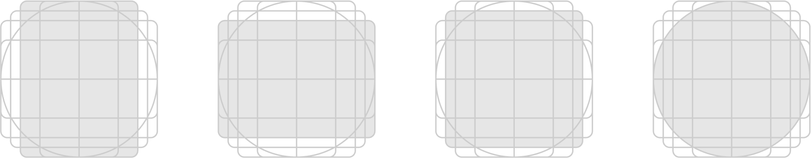
A visually balanced silhouette allows good icon scalability and also avoids extremes of thick and thin shapes. Use the grid to design a silhouette that’s distinctive, yet legible at small sizes. Use as few shapes with as few corners as possible to distinguish your product while still feeling at home on Windows.
Detail
When adding detail, care should be taken to maintain legibility at small sizes. It is recommended to only add additional literal detail to the most prominent layer of an icon.
Design guidance: Color and gradients
Pick colors carefully and avoid relying on color alone to convey meaning. Use shape and metaphor with color to communicate. To avoid complexity when scaling an icon across a range of sizes, treatments to colors should be minimized. Color gradients, overlays of varying opacity, and tints of color should be kept to a minimum.
Gradients should be subtle for the most part. Try to limit your gradient ramps to only one or two steps in both the horizontal and vertical directions.
The default angle for gradients is 120 degrees. Start and end points can be adjusted accordingly. The important thing is that it’s a smooth transition. Avoid very tight transitions that would feel like reflections or dimension.
Monochrome palette
Create a monochrome palette using the following steps:
- Create three colors from the same hue. In most cases you will have to adjust the light color to be brighter and the dark color to be less saturated, but of course you should use your best judgement.
- Create three steps in between each base color. This will be your primary lane. Most of the icon should be comprised of these colors.
- For a wider palette, create tints to white and shades to black using the same method as step 2. These tints and shades should be used only when you need a little more contrast.
- The tints of the dark colors and shades of the light colors are usually useless and drab. They can be removed.
Monochrome gradients
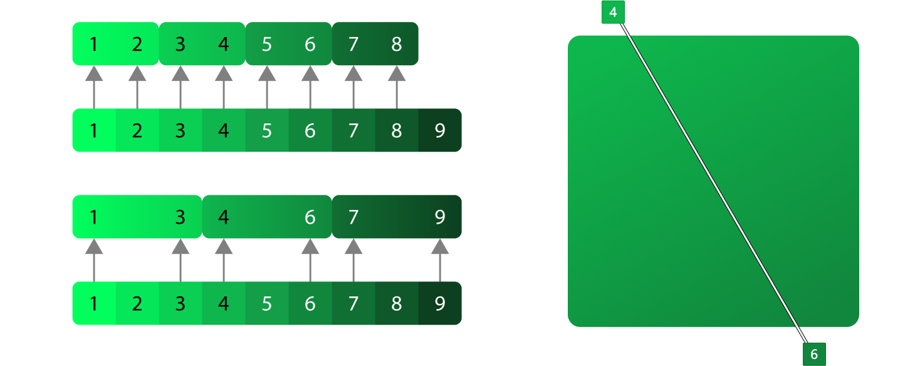
Monochrome gradients are usually used to give a subtle hint toward an ambient light angle coming from the top left. They should not be treated as a direct light source though. The idea is to give the shapes a little movement without being too dramatic.
Analogous palette
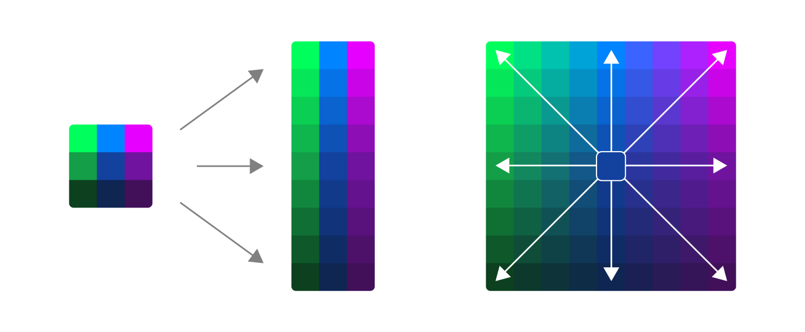
Creating an analogous palette is exactly like creating a monochrome palette, but with more colors. The key to this type of palette is not to overdo it. Be thoughtful with your color transitions.
- Create three color sets instead of one.
- Make vertical ramps out of all three color sets.
- Instead of creating tints and shades using white and black, use your second and third colors instead.
Analogous gradients
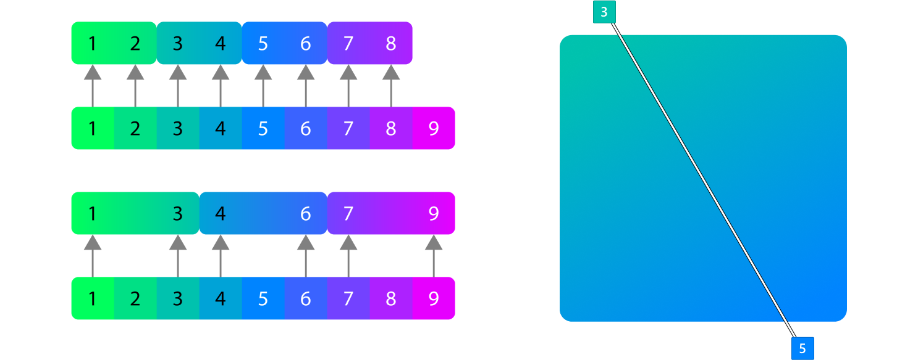
Analogous gradients should be at the same angle as the monochrome, but don't always have to be. Typically lighter hues should be on top left to avoid looking overly dramatic but also to be as consistent as possible with the monochrome.
Design guidance: Contrast, shadow, and perspective
Color contrast
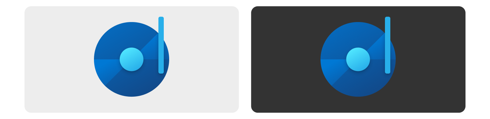
Accessibility is a high priority for Microsoft. App icons are primarily displayed on either light and dark backgrounds but displayed over desktop background images and tints or shades of the system accent color. It is difficult to make an icon 100% accessible on every background, but there are several things you can do to ensure your icon is as accessible as possible.
- Use color values in all 3 ranges, dark, medium, light.
- Make sure at least half of your icon passes a 3.0:1 contrast ratio on light and dark theme.
- Some hue values are more difficult than others. Yellow will never pass an accessible contrast ratio on light theme until it’s brown. Reds are more difficult on dark theme.
- Though not required, you have the option to provide separate light and dark theme assets for Taskbar, Start and other theme-sensitive areas of Windows.
High contrast
Tip
Windows 11 no longer requires high contrast assets for app icons.
High contrast icons are black and white and should be a direct representation of your app icon. Often the high contrast icon can be created from the color version using a solid fill and line. Avoid gradients in high contrast icons. Sometimes monoline icons are required for in-app experiences should be designed according to these guidelines.
Layering and shadow
Top/Front facing view.
Isometric view to illustrate z-depth. For illustrative purposes only; not a suggested design option.
Icons are composed of flat objects sitting on top of the layers below it.
- Use as few layers as possible, and minimize extreme contrasts of scale between shapes.
- Use drop shadows within icons to create definition between object layers and visually connect components to each other within the icon design.
- In general, shadows cast from light onto dark shapes have the best result.
- Inner shadows should only cast a shadow on the graphic symbol, not on to the surrounding background.
- There are two types of inner shadow both of which have two shadows each
Shadow construction
All of these values are to be rendered at 48x48 px and scaled up or down from there. If this is not adhered to, shadows will be inconsistent across the icon system. There are two types of object shadows both of which have two shadows each. Objects within the same metaphor have a shadow with slightly less blur.
Same metaphor
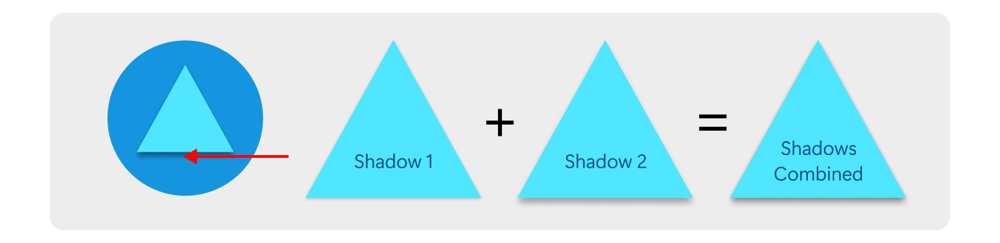
This shadow is used when you have content within a single metaphor that needs some depth. It’s not always necessary to do this, but single object metaphors need some depth to feel like part of the system. the blue on shadow 2 is the only difference.
Separate metaphor
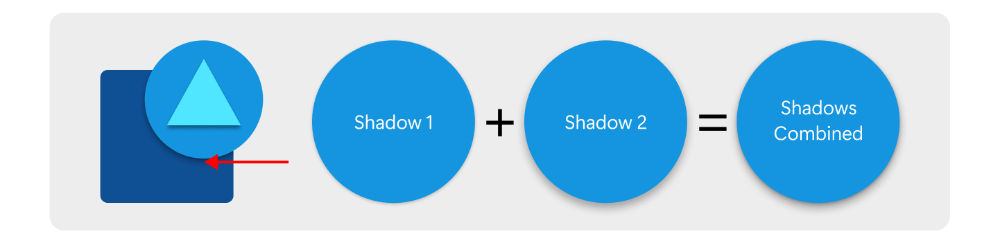
This shadow is used when you have two objects that overlap each other but are not necessarily part of the same metaphor. The shadow should be masked into the shape below it.
Perspective
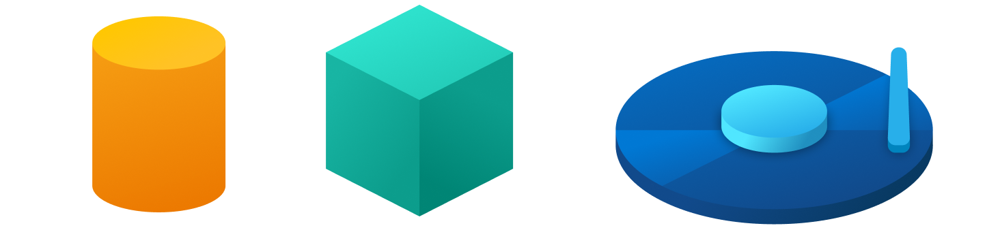
The icons on the left are fairly simple; perspective is not recommended, but may be appropriate here. The icon on the right is too complex for perspective, so using it for this icon is not recommended.
Icons should be drawn with a straight-on perspective to present the metaphor in a simple easy to understand way. Exceptions are cases where the metaphor doesn’t read well without viewing another side of it. For example a cylinder viewed straight on is a rectangle so the top could be added to show that it has volume. The other exception is when an app is related to 3d where it makes sense to show dimension. In both cases the previous guidelines about flat objects still applies. Layers should always be flat and perpendicular to the viewing angle.